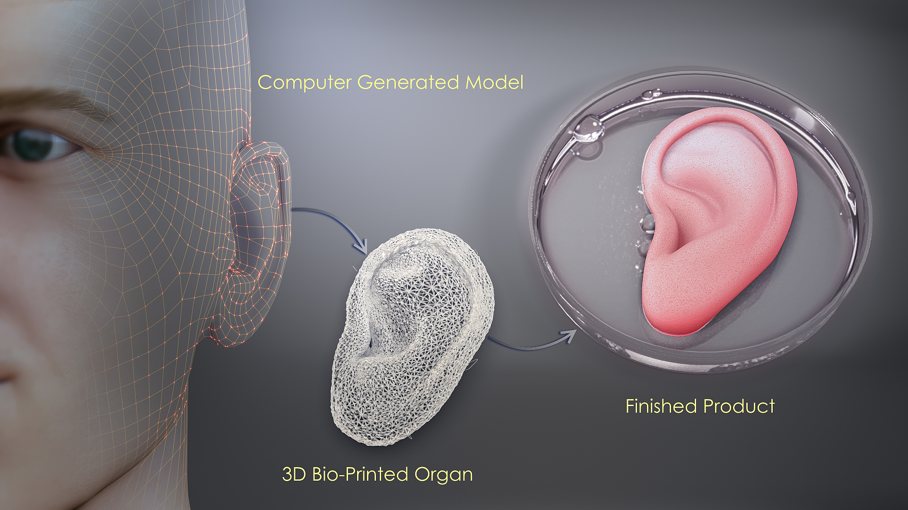

| Características | |
| 1- Compatibilidad inmunológica: Al igual que con cualquier trasplante de tejidos u órganos, es importante que el donante y el receptor sean genéticamente compatibles para minimizar el riesgo de rechazo.
2- Estado vascularizado: El órgano donado debe tener su red de vasos sanguíneos intacta y funcionando correctamente para garantizar su supervivencia y nutrición adecuada después del trasplante. 3- Integridad estructural: La oreja donada debe tener una estructura anatómica intacta y estar libre de deformidades para que pueda ser un reemplazo adecuado para la oreja del receptor. 4- Funcionalidad auditiva: Si se preservan o reconstruyen las estructuras auditivas en el trasplante, se busca restaurar en la medida de lo posible la audición del receptor. |
 |
| Técnicapara su fabricación | |
| Podemos usar la tecnología 3D ha revolucionado el campo de la medicina. podemos usar la impresora 3D que utiliza materiales biocompatibles, como el polímero PLA, para fabricar la prótesis capa por capa. | |
| Beneficios y propuestas de mejora | |
| Restauración de la audición: En algunos casos, el trasplante de oreja puede ayudar a mejorar la audición en personas que tienen problemas de audición relacionados con deformidades o lesiones en el oído externo. Una posible propuesta de mejora para el trasplante de oreja podría ser la incorporación de técnicas de impresión 3D y bioingeniería. Esto permitiría crear una oreja personalizada y funcional a partir de células madre del propio paciente. | Opinion |
| En mi opinión, el trasplante de oreja 3D es un buen uso de tecnología en la medicina y si ofrece un enfoque innovador y prometedor para la reconstrucción auricular, pero aún se requiere más investigación y desarrollo antes de que pueda convertirse en un procedimiento clínico seguro ampliamente utilizado. | Datos |
| Datos de Geraldine Zhiyan Wu Yu | |
| Intrenet | |
| pagina web del colegio juan 23 | |